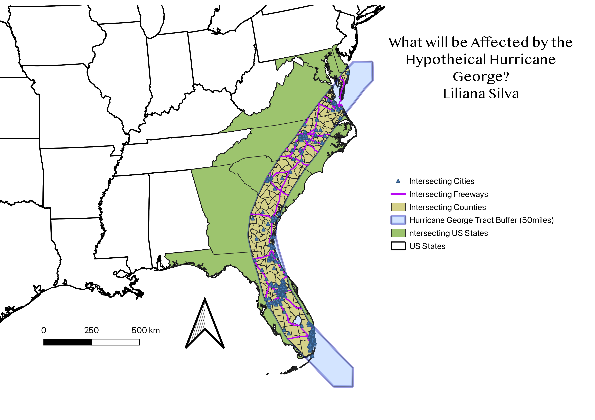

Homework 8: Geoprocessing Analysis
Liliana Silva
I wanted to create a hurricane path along the east coast to see which states, cities, counties, and major roads would be affected if the wind field was about 100 miles wide.

Question: Which cities, counties, and major roads will be affected by hypothetical Hurricane George with a wind field about 100 miles wide?
I used the buffer tool to create 50 miles from the right and left (adding up to the total 100 mile wind field) of the hypothetical hurricane path.
I used the intersect tool to figure out which states, cities, counties, and major roads would be in possible danger from the wind field.
States in danger: 7 States
Cities in danger: 236 Cities
Counties in danger: 219 Counties
Major roads in danger: 72 Major roads
Data used for this project
New Datasets I Made
Hyothethical Hurricane Tract Line dataset
Buffer of 50 Mile Wind Field From Hypothethical Hurrican Tract dataset
US Counties Intersecting Hypothethical Hurricane Tract dataset
US Major Cities Intersecting Hypothethical Hurricane Tract dataset
US Freeways Intersecting Hypothethical Hurricane Tract dataset
Datasets I Used
US States dataset
US Counties dataset
US Freeways dataset
US Major Cities dataset